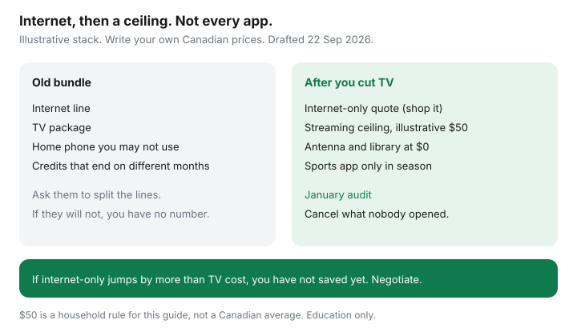

Internet · Canada
Cut Cable TV, Keep Fast Internet: A Canadian Cord-Cutting Cost Stack
The bundle looks cheaper until you ask what the internet line costs alone. Canadian households drop cable, keep a fast connection, and then rebuild television out of three or four streaming subscriptions that quietly pass the old TV bill. The save is real when you separate the lines and cap what you add back. It disappears when “internet-only” was a threat you did not price, or when sports apps run all year for a season you watch in the fall. This is the cost stack. It is not a channel guide, and it is not a streaming partnership.
Disclosure: Education only. Internet plans and streaming services are offer types. Saving Optimizer does not claim a live partnership with an ISP or a streaming brand. Prices below that are not tied to a checkout are labelled illustrative. Confirm Canadian prices; U.S. sticker prices are the wrong currency and often the wrong catalogue.
Key takeaways
- Ask the ISP to split internet from TV and home phone before you cancel anything. If they will not, you do not have a number.
- Rebuild only the live news and sports you will open. Put season start and end dates on the calendar so apps do not bill in July for hockey you are not watching.
- This guide uses $50 a month as an illustrative streaming ceiling for a middle-aged household. It is a rule you set, not a market average.
- Antenna, library apps, and free ad-supported services are the $0 layer. They are city-dependent and catalogue-dependent.
- After you drop TV, negotiate internet-only with a competitor’s quote. Then audit the stack every January so it does not become the cable bill again.
Separate the internet line from the TV and phone bundle
Bundles hide the product you want to keep. The bundle guide is the longer version: internet, TV, and home phone often expire on different dates, and a mobility credit is only a save if you wanted that phone plan. For the cord-cut itself, force three quotes at the same civic address:
- What you pay now, split into internet, TV, phone, equipment, and credits, with the month each credit ends.
- Internet-only from the same company, after you remove TV, including any “bundle discount” they threaten to remove.
- Internet-only from one competitor or independent, 24-month total, upload written down.
If internet-only at the old company jumps by more than the TV package costs, you have not saved money by cancelling television. You have unbundled into a worse internet rate. That is the moment for a winback email, not for a speech about cutting the cord. Use the Rogers script or the Bell and Telus playbooks, and ask for internet-only on purpose.

Rebuild live sports and news without a full cable package
List the two or three things the household actually turns on. A full theme pack exists to make this list feel impossible. It is usually short: a local newscast, one sports league, and something a parent watches in the evening.
| Need | Where to look first | Your monthly |
|---|---|---|
| Local and national news | Over-the-air CBC, Radio-Canada, CTV, Global, Citytv, or TVA where the antenna works; the broadcaster’s own app | Often $0 |
| One sports league in season | The league or the Canadian rights holder’s app, paused in the off-season | Write the live price |
| French live television in Québec | Antenna for Radio-Canada and TVA, or a thin package. See the Montréal bill guide. | Write the live price |
| Everything else | One general streaming service at a time, not four | Inside the ceiling |
If the sports line plus internet-only is more than the old bundle, keep a small TV package and drop the channels you do not open. Cord-cutting is optional. Overpaying for a logo you will not watch is not.
A streaming stack ceiling for a middle-aged household
Set the ceiling before you subscribe. This page uses $50 a month as an illustrative cap for the whole stack: sports, series, and movies combined. It is not a statistic. It is a number that stays under a typical TV package and is still enough for one paid service plus a sports app in season. If your household needs a different cap, write that number instead. The discipline is the cap, not the fifty.
Rules that keep the cap honest:
- One paid general service at a time. Finish the show, cancel, rotate next month.
- Annual plans only when you already know you will watch for the year. A “two months free” annual charge is a large bill on day one.
- No stacking of trials “just in case.” Trials become paid plans on a Tuesday you are not watching.
- Password sharing inside the household is fine. A login you pay for so a relative in another city never has to subscribe is a gift, and it belongs in the cap.
Internet speed is rarely the reason to keep a higher tier after you cut TV. Two high-definition streams and a video call fit on a mid-range plan if Wi-Fi reaches the rooms. Check the worksheet before you let a winback “throw in” gigabit you cannot use.
Antenna, free ad-supported services, and the library
The $0 layer is unglamorous and it works in a lot of Canadian homes.
- Antenna. In houses with a clear path, rooftop or attic antennas still receive Canadian networks. In a concrete condo they often receive nothing. Look up reception for your address, or borrow an antenna, before you buy a mast. Hardware is once. There is no monthly.
- Broadcaster apps. CBC Gem and the CTV, Global, and Noovo or TVA apps cover more news and next-day shows than people remember. Availability and ads differ. They are not cable, and they are not $0 if you add the paid tier without noticing.
- Free ad-supported services that operate in Canada (the catalogues change) for background television. If the app wants a U.S. postal code, it is the wrong country.
- Public library. Libby or Hoopla for ebooks and some video, with your library card. The wait list is the price. It is still $0.
Negotiate an internet-only rate after you drop TV
Do this in one sitting, after the split quotes exist.
- Cancel TV and home phone only if those lines are ones you have replaced or do not use. Keep internet up.
- Call retention with the competitor’s internet-only total. Ask them to match it without adding television back.
- Get rate, credit end date, upload, term, and ETF in one email. A verbal “we’ll note the account” is how the bundle discount falls off and nothing replaces it.
- Watch the next two bills. TV rental boxes have their own return charge. Send them back with a receipt, the same way you return a modem.
CRTC 2026-43 does not stop a company from charging more for internet-only than for a bundle. It stops a junk activation fee on the change if no technician is involved. A truck roll to pick up boxes is a different line. Read the fee guide if a “plan change” charge appears with no visit.
An annual audit so streaming does not replace the cable bill
Put a repeating January note in the calendar, next to the month your internet credits end. The seven-day promo plan covers the internet cliff. The same week, open every streaming charge:
- Which services did someone open in the last 30 days?
- Which sports apps are out of season?
- Is the total under the ceiling?
- Is internet-only still cheaper than a new bundle offer? If a bundle is now cheaper and you want the TV, take it on purpose. Accidental cord-cutting is not a personality.
The household that saves is the one that can say, out loud, what internet costs, what television used to cost, and what the apps cost this month. Three numbers. If you cannot name them, the stack has already replaced the cable bill.
Sources & date stamps
- $50 streaming ceiling — illustrative household rule for this guide, 22 Sep 2026, not a measured Canadian average.
- Bundle mechanics and the Bell Ontario $10 mobility-credit example — see the bundle guide’s 21 Sep 2026 read. Do not reuse Ontario dollars outside that page’s scope.
- CRTC 2026-43 and CCTS fee page, 2 Sep 2026, re-read 22 Sep 2026 — a no-visit plan-change fee is a different issue from a higher internet-only rate.
- Over-the-air reception is address-specific. Confirm locally. No national antenna map is claimed here.
Frequently asked questions
Will my internet get more expensive if I drop TV?
Sometimes the bundle discount was hiding a high internet rate. Ask for an internet-only quote at the same address before you cancel TV. Compare that quote with a competitor for 24 months. If internet-only jumps by more than the TV package costs, you have not saved anything yet.
What if the household still wants live sports?
Price the one or two services you will actually open, in Canadian dollars, for the months the teams play. A full cable pack is often the wrong tool. Three sports apps you forget to pause in the off-season are also the wrong tool. Put the season dates on the same calendar as the internet promo.
Does an antenna replace cable in Canada?
In some cities it receives CBC, Radio-Canada, CTV, Global, Citytv, or TVA, depending on the roof and the neighbourhood. In a concrete condo it may receive nothing. Check reception before you buy hardware. Antenna is a one-time cost, not a monthly plan.
How do I stop streaming from replacing the cable bill?
Set a ceiling before you subscribe. This guide uses $50 a month as an illustrative household cap, not a market price. Rotate one paid service at a time, use library apps and free ad-supported services for the rest, and audit every January. If the stack beats the cap, cancel the one nobody opened.
Is this a TV channel guide?
No. It is the money stack: internet-only versus the bundle, then a cap on what you add back. Channel lineups change by provider and province. The save is the line items, not a list of shows.